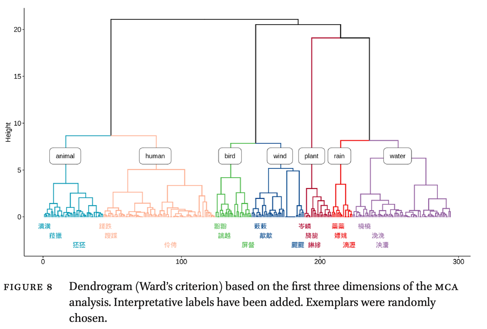
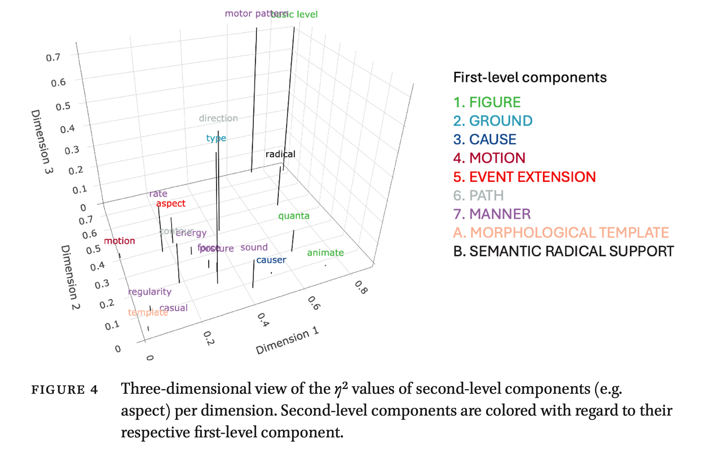
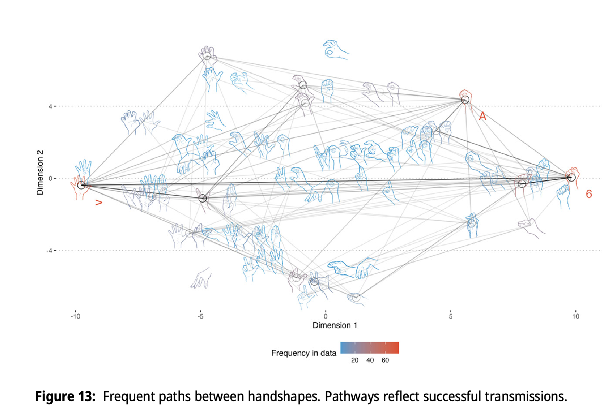

tl;dr
What do you mean “too long, didn’t read”?
Go read it, it’s not that long, not even in times of diminished/diminishing concentration due to cellphone addiction.
But okay okay, two papers of mine appeared on the same day in their online and #OpenAccess version. This deserves to be celebrated. Ecce this blogpost.
Van Hoey, Thomas. 2025. Waddling, Wandering and Waving: Literary Chinese Ideophones and the Motion Semantic Grid. Cognitive Semantics, 11, 1-29. https://doi.org/10.1163/23526416-bja10075 click this link
Thompson, Arthur Lewis, Van Hoey, Thomas, Chik, Aaron Wing Cheung and Do, Youngah. 2025. Iconic hand gestures from ideophones exhibit stability and emergent phonological properties: an iterated learning study. Cognitive Linguistics, 2025. https://doi.org/10.1515/cog-2024-0033 click this link
You can click those links to actually see what they are all about, and even read them, because both are open access.
Am I entering my acceptance era?
January 31. I wake up and, regretabbly out of a bad habit, scroll through all the apps I still allow notifications from. Among them, Outlook (you never know when the world happens to burn down during the night – an ever more likely scenario). Yet, this time it’s a great message:
Hi Thomas Congratulations on your high-quality paper submitted to COSE [Cognitive Semantics, tvh].
It will be the first OA paper accepted and published online in 2025. COSE will be turned to OA from 2025 onwards, sponsored by my universiy,Beihang, which means we have paid the OA fee for your article.Best Thomas Li Editor-in-Chief
I am very excited because I kind of did that paper “between the soup and the potatoes” as we say in Dutch. It is linked to a special issue devoted to new applications of the Talmyan motion typology (Talmy 2000a, b) to the realm of ideophones. The editors for this special issue, Kiyoko Toratani and Kimi Akita, already had held a great online workshop about this topic a few months before, last summer. Alas, I couldn’t join then but I watched the recordings, and figured I could do something with (literary) Chinese ideophones. So I am very grateful to them for still inviting me and keeping me in the loop for this special issue.
Last February or so I did a bout of annotating and invoked the awen for creative writing. Add to that a few walks in the woods of Wuustwezel (#uilenbos) and whippity whoopi, the idea for a paper emerged. I made some vague promises in the abstract about what I predicted my findings to be. Okay, it must be said, after working on Chinese ideophones for almost a decade now, I have developed some intuitions of what the data is like, so it’s not like that came totally out of thin air.
Fast forward a few months, and I’m annotating the data between the FWO interview and the result to keep myself busy. I try a few clustering techniques. And lo and behold, one of my most favorite papers suddenly takes shape.
I am actually very proud of this one. It’s probably the most QLVL’y paper I’ve made to date. And the graphics came out pretty well.
For example, this 3D version of plotting first- and second-level components (it’s a bit technical, sowwy) was really cool to make.

I also know I had a good paper in my hands when I presented it at the 21st International Congress of Linguists (September 2024 in Poznań, Poland) and the feedback of the audience was really positive.
So yeah, am I entering my paper acceptance era??
Slow science
It certainly seems like this finally the paper acceptance era. For example, one key piece of research conducted during my postdoc at the University of Hong Kong also finally came through in the last few months. Note that this was not an easy birth: it took us quite a few years to cast our conference presentation into a coherent paper that the reviewers/gatekeepers (you know who you are Reviewer 2!) deemed acceptable. On top of that, the journal we submitted it to in the end, Cognitive Linguistics, had a switch of editor in chief, and that also delayed it, as far as I understand the history.
The concept of the paper is quite simple: we played the game of telephone. But with a twist: we would be looking at ideophones and gesture interplay + teaching some participants the wrong, non-iconic mappings.
This transmission experiment led to lots of interesting findings. But the ones that made it into the paper revolved around the gesture parameter of handshape, an aspect of sign languages and gesture in general that is generally viewed as not the most salient, yet important for conveying nuance. We found that we can break iconic mappings down into smaller features, like a phonological system. Sometimes iconicity “breaks” when the physiological naturalness of certain handshapes evolves into different configurations. Other times, iconicity acts as a strong enough force to resist those natural tendencies of handshape drift.
Cool stuff! Enjoy this picture.

Click like, subscribe, and don’t forget to cite <3
Now go read them!!!
Van Hoey, Thomas. 2025. Waddling, Wandering and Waving: Literary Chinese Ideophones and the Motion Semantic Grid. Cognitive Semantics, 11, 1-29. https://doi.org/10.1163/23526416-bja10075 click this link
Thompson, Arthur Lewis, Van Hoey, Thomas, Chik, Aaron Wing Cheung and Do, Youngah. 2025. Iconic hand gestures from ideophones exhibit stability and emergent phonological properties: an iterated learning study. Cognitive Linguistics, 2025. https://doi.org/10.1515/cog-2024-0033 click this link
You can click those links to actually see what they are all about, and even read them, because both are open access.